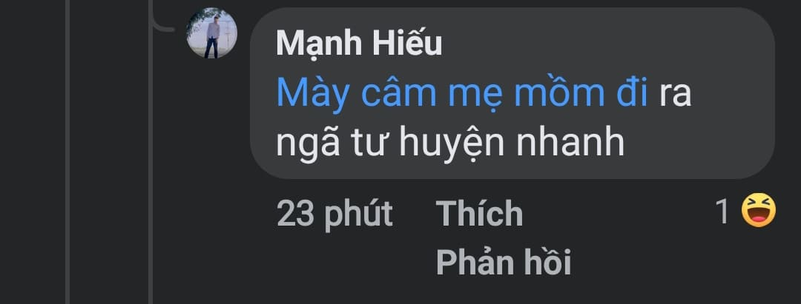
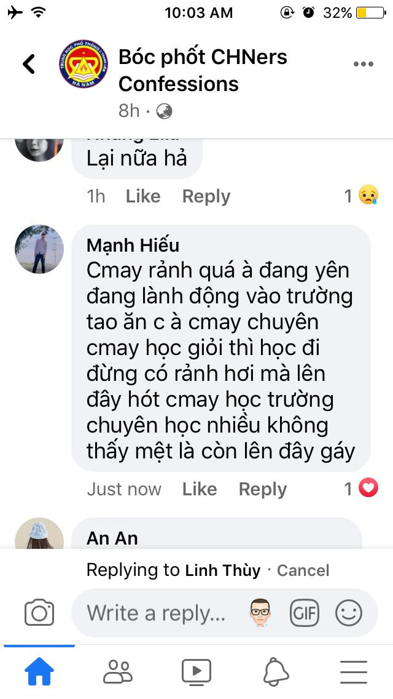

Văn hóa mạng hay văn hóa Internet là một nền văn hóa mà đã nổi lên, hoặc đang nổi lên, từ việc sử dụng mạng máy tính cho việc thông tin liên lạc, giải trí và kinh doanh. Văn hóa Internet cũng là nghiên cứu về các hiện tượng xã hội khác nhau liên quan đến Internet và các hình thức mới khác của truyền thông mạng. Ví dụ về các hình thức giao tiếp mạng mới này bao gồm, cộng đồng trực tuyến, trò chơi nhiều người chơi trực tuyến, máy tính có thể đeo được, trò chơi xã hội, phương tiện truyền thông xã hội, ứng dụng di động, thực tế gia tăng và nhắn tin [1] cũng như các vấn đề liên quan đến nhận dạng, quyền riêng tư và hình thành mạng lưới.
 